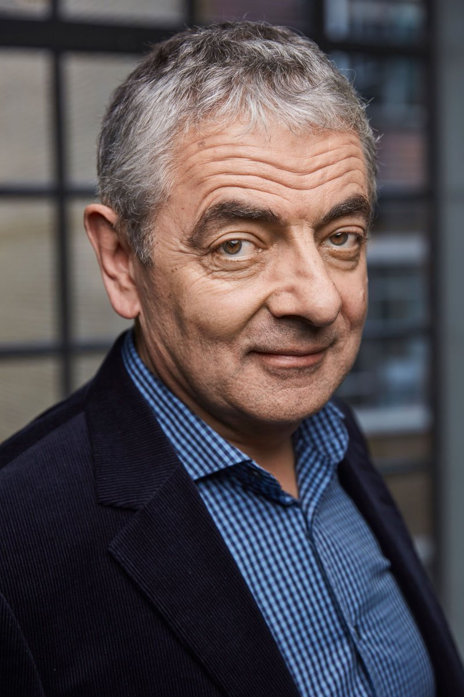
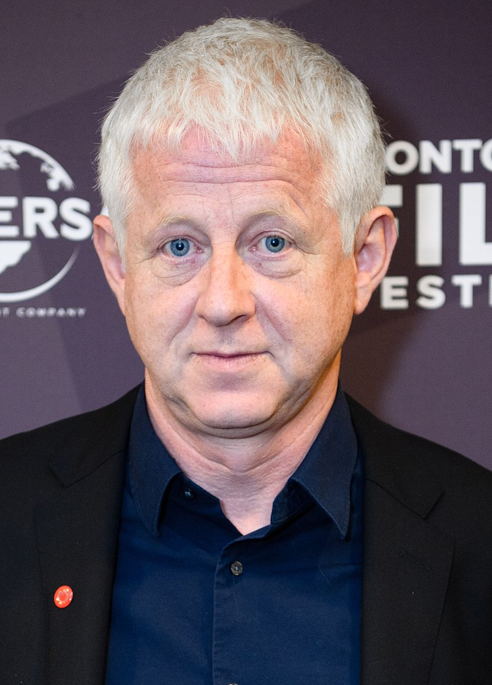

The title character and main protagonist, played by Rowan Atkinson, is a childish buffoon who brings various unusual schemes and contrivances to everyday tasks. He lives alone at the address of Flat 2, 12 Arbour Road, Highbury, and is almost always seen in his trademark tweed jacket and a skinny red tie.
SEASONS
1 January 1990
Mr. Bean
Mr. Bean attends a mathematics exam, where he tries to copy from a student (Paul Bown) under the nose of the invigilator (Rudolph Walker). Afterwards, he surreptitiously changes into his swimming trunks so as not to be noticed by someone sitting nearby at a beach (Roger Sloman) and later struggles to stay awake during a church service, much to the annoyance of the man sitting next to him, Mr. Sprout (Richard Briers).
5 November 1990
The Return of Mr. Bean
Bean tries out his new credit card at a department store, visits a fancy restaurant for his birthday and is served an unwanted dish, leading him to try a variety of strategies to avoid eating it, and then has an unfortunate altercation with Queen Elizabeth The Queen Mother
30 December 1990
The Curse of Mr. Bean
Bean visits the local swimming pool where he realises that he is scared of diving, tries to find a way to leave the car park without paying, makes a sandwich in the park sitting next to a man (Angus Deayton), jumps a traffic light in his car by getting out and pushing it, and then joins his girlfriend (Matilda Ziegler) to watch a scary movie at the cinema.
15 October 1991
"Mr. Bean Goes to Town
Bean buys a new portable television, but has difficulty getting good reception. At the park, he has his camera stolen and later finds a unique way of identifying the culprit (Nick Hancock). After leaving his shoe on top of a car, Bean hops around town to retrieve it and later takes his girlfriend to see a magic show and have a dance at the disco for a night.
1 January 1992
The Trouble with Mr. Bean
Bean wakes up late for his dental appointment, forcing him to drive to the clinic while dressing and brushing his teeth. At the clinic, his appointment progresses badly after he accidentally anesthetizes the dentist (Richard Wilson), forcing him to finish the dental procedure himself. He then heads to the park to have a peaceful picnic by himself, but is then pestered by wasps.
17 February 1992
Mr. Bean Rides Again
On his way to post a letter, Bean attempts to save a man suffering from a heart attack, but when the ambulance arrives, Bean uses it to jump start his Mini's dead battery, inadvertently disabling the ambulance. After accidentally getting himself locked inside a mailbox while posting his letter, Bean packs for a holiday, suffers from a noisy laughing man (Stephen Frost) during a train ride and then attempts to entertain a sick boy on a plane.
29 December 1992
Merry Christmas, Mr. Bean
Cn Christmas Eve, Bean heads to town to purchase preparations for the holidays, during which he plays with a Nativity scene at a department store and later conducts a Christmas band at the town market. On Christmas Day, he attempts to cook a turkey, during which he accidentally gets his head stuck inside it, and later relaxes for a reserved Christmas meal with his girlfriend.
17 February 1993
Mr. Bean in Room 426
Bean treats himself to a bank holiday weekend at the Queen's Hotel, where he seeks competition with his hotel neighbour involving rooming and dining. After he eats some spoiled oysters for dinner by accident, he has a nightmare about them and his neighbour. With his stomach turning, he goes outside of his room naked to complain to his other neighbour who is playing very loud music, but accidentally gets himself locked out, prompting him to try sneaking back into his room without being seen.Guest star: Danny La Rue
10 January 1994
Do-It-Yourself Mr. Bean
On New Year's Eve 1993, Bean hosts his very own party with his best friends Rupert and Hubert, but it isn't long before his guests discover that there is more fun at the party next door and trick Bean into letting them go. The following morning on New Year's Day, Bean buys construction tools and a large recliner at the January sales of a department store and has a unique way of driving then home, then tries painting his flat himself and starts off the new year with a bang.
25 April 1994
Mind the Baby, Mr. Bean
On his way to the Southsea funfair, Bean accidentally becomes lumbered with a baby boy with no idea of how or where he came from, forcing him to try having fun at the fair with the baby. Throughout the day, the baby manages to survive Bean's unique style of mishaps before being reunited with his mother at the end.
20 September 1995
Back to School Mr. Bean
After causing chaos at the town launderette while having his laundry cleaned, Bean tries his hand at mini golf, but after being told by the course's owner that he can only touch the ball with the club and not with his hands, Bean's poor aim leads him on an elaborate tour around town before ultimately returning to the course several hours later with a final score of 3,427 strokes.
31 October 1995
Goodnight Mr. Bean
At a hospital waiting room, Bean find ways to jump the queue due to his impatience. Later at a park, he tries to get his camera to automatically take a picture of him standing next to a Queen's Guard, all the while taking advantage of the guard's duty to remain still by doing all he can to comically alter his appearance. At the end of the day, Bean tries to cure his insomnia with some unusual methods at home.
15 November 1995
Hair by Mr. Bean of London
At a barbershop, Bean holds the fort for his hairdresser when he goes to answer a phone call, resulting in him giving several customers terrible haircuts. Later, Bean heads to a fete, where he cheats at all the games and enters Teddy into a children's pet show, where his inanimacy allows Bean to pass all the obedience tests with flying colours. After a train journey, Bean accidentally loses his ticket and unsuccessfully sneaks out past the station's guard (Robin Driscoll) inside a mail bag.
15 November 1995
The Best Bits of Mr. Bean
At a hospital waiting room, Bean find ways to jump the queue due to his impatience. Later at a park, he tries to get his camera to automatically take a picture of him standing next to a Queen's Guard, all the while taking advantage of the guard's duty to remain still by doing all he can to comically alter his appearance. At the end of the day, Bean tries to cure his insomnia with some unusual methods at home.
15 December 1995
The Best Bits of Mr. Bean
During a rainy day, Bean ventures into his loft to find an umbrella. As he shifts through his stored items, he begins to reminisce his past adventures, including his dental appointment, the church service, and the time his Mini was crushed by an Army Tank.
ACTERS
Rowan Atkinson
Rowan Sebastian Atkinson CBE (born 6 January 1955) is an English actor, comedian and writer. He played the title roles on the sitcoms Blackadder (1983–1989) and Mr. Bean (1990–1995), and the film series Johnny English (2003–2018). Atkinson first came to prominence in the BBC sketch comedy show Not the Nine O'Clock News (1979–1982), receiving the 1981 British Academy Television Award for Best Entertainment Performance, and The Secret Policeman's Ball (1979) where he performed a skit. Subsequent skits on stage have featured solo performances as well as collaborations. His other film work includes the James Bond film Never Say Never Again (1983), playing a bumbling vicar in Four Weddings and a Funeral (1994), voicing the red-billed hornbill Zazu in The Lion King (1994), and playing jewellery salesman Rufus in Love Actually (2003). He portrayed Mr. Bean in the film adaptations Bean (1997) and Mr. Bean's Holiday (2007). Atkinson also featured in the BBC sitcom The Thin Blue Line (1995–1996), and he played the titular character in ITV's Maigret (2016–2017). His work in theatre includes the role of Fagin in the 2009 West End revival of the musical Oliver!. Atkinson was listed in The Observer as one of the 50 funniest actors in British comedy in 2003,[3] and among the top 50 comedians ever, in a 2005 poll of fellow comedians.[4] Throughout his career, he has collaborated with screenwriter Richard Curtis and composer Howard Goodall, both of whom he met at the Oxford University Dramatic Society during the 1970s. In addition to his 1981 BAFTA, Atkinson received an Olivier Award for his 1981 West End theatre performance in Rowan Atkinson in Revue. Atkinson was appointed a CBE in the 2013 Birthday Honours for services to drama and charity.
Matilda Ziegler

Ziegler's first screen role was in her early twenties, during 1987–89; she appeared in the BBC One soap opera EastEnders, playing Donna Ludlow, the illegitimate daughter of series regular Kathy Beale. Donna contended with prostitution, an attempted gang rape, heroin addiction and finally suicide (dying of a heroin overdose). The final death scenes of Ziegler's character, who had choked to death on her own vomit, have been hailed as one of the most powerful anti-drug images ever screened on the programme.[2] She left EastEnders in April 1989. In the early 1990s, Ziegler starred in the ITV comedy, Mr. Bean, where she played multiple characters, especially a three-episode stint as Irma Gobb, the title character's long-suffering girlfriend. She reprised her role as Irma Gobb, voicing her in Mr. Bean: The Animated Series, from 2002 to 2004, and in the revived series from 2015 to 2019. Other television credits include: Lark Rise to Candleford (2008–2010) in which she played the part of Pearl Pratt, in the BBC adaptation of Flora Thompson's novel; Harbour Lights (1999); Where the Heart Is (2000); Holby City (2003); An Unsuitable Job for a Woman (1998); The Bill (2003), and Home, alongside Anthony Sher in an adaptation of J.G. Ballard's novel. Ziegler played Ruth, wife of car salesman Toni, in the BBC sitcom Swiss Toni (2003–04). She also appeared in the BAFTA Television Award winning drama, Sex Traffic (2004). In 2005, she played Christine Miller in the fourth series of The Inspector Lynley Mysteries, and in 2007, she guest starred in the BBC One daytime medical drama Doctors. She also appeared in Outnumbered, Lewis (in the episode 'The Soul of Genius', 2012), Death in Paradise (2013), and Vera (in the episode "Young Gods", 2013). In 2015, she appeared in an episode of Foyle's War, and in series 4 episode of Call the Midwife. In 2020 she appeared in a second season episode of The Alienist, and appeared in two episodes of The Girlfriend Experience in 2021. Ziegler's film roles include Decadence (1994), Jilting Joe (1998), City Slacker (2012), and The Rhythm Section (2019) where she played Blake Lively's mother.
Richard Curtis
Richard Whalley Anthony Curtis CBE (born 8 November 1956) is a British screenwriter, producer and film director.[1] One of Britain's most successful comedy screenwriters, he is known primarily for romantic comedy films, among them Four Weddings and a Funeral (1994), Notting Hill (1999), Bridget Jones's Diary (2001), Love Actually (2003), Bridget Jones: The Edge of Reason (2004), About Time (2013) and Yesterday (2019). He is also known for the drama War Horse (2011) and for having co-written the sitcoms Blackadder, Mr. Bean and The Vicar of Dibley. His early career saw him write material for the BBC's Not the Nine O'Clock News and ITV's Spitting Image. In 2007, Curtis received the BAFTA Fellowship for lifetime achievement from the British Academy of Film and Television Arts.[2] He is the co-founder, with Sir Lenny Henry, of the British charity Comic Relief, which has raised over £1 billion.[3] At the 2008 Britannia Awards, he received the BAFTA Humanitarian Award for co-creating Comic Relief and for his contributions to other charitable causes.[4]
MUSIC
Mr. Bean features a choral theme tune in the key of C major written by Howard Goodall (adapted from a passage of "Locus iste" by Anton Bruckner) and performed by the Choir of Southwark Cathedral (episodes 2–11 and 14; opening of episode 15) and Christ Church Cathedral, Oxford (episodes 12 and 13; closing of episode 15). The words sung during the title sequences are in Latin:
1.Vale homo qui est faba – "Farewell":
2.Ecce homo qui est faba – "Behold the man who is a bean":
3.Finis partis primae – "End of part one":
4.Pars secunda – "Part two":
The theme was later released on Goodall's album Choral Works. Goodall also wrote an accompanying music track for many episodes. The first episode of Mr. Bean did not feature the choral theme tune, but instead an up-beat instrumental piece also composed by Goodall, which was more an incidental tune than a theme. It was used while Bean drove between locations intimidating the blue Reliant, and as such, was sometimes heard in later episodes whenever Bean's nemesis is seen. The instrumental of the theme tune was used in the original series finale of Mr. Bean: The Animated Series titled "Double Trouble". In the episode "Tee Off, Mr. Bean", Goodall's choral theme tune for another Richard Curtis comedy, The Vicar of Dibley, is heard playing on a car stereo. In "Merry Christmas, Mr. Bean", while playing with Queen's Royal Guards figurines and the nativity set, he hums "The British Grenadiers", which was quoted in the theme to Blackadder Goes Forth.[34] Mr. Bean appeared in the music video of a 1991 fundraising single for Comic Relief, fronted by Hale and Pace, entitled "The Stonk".[35] Mr. Bean also appeared in the music video for the Boyzone single "Picture of You",[36] which was the main theme song for the first film adaptation. Mr. Bean also made a Comic Relief record in 1992, entitled "(I Want To Be) Elected" and which was credited to 'Mr. Bean and Smear Campaign featuring Bruce Dickinson'. It was a cover of the Alice Cooper song of the same name, and reached number 9 in the UK singles chart.[37]London 2012 Olympic Summer Games
In 2012, Atkinson reprised his character for a live performance as part of the London 2012 Summer Olympics opening ceremony. In the scene, Mr. Bean works within the London Symphony Orchestra in its performance of "Chariots of Fire", conducted by Simon Rattle. For this scene, Bean does not wear his usual brown tweed sports jacket but the traditional clothing of the musician – white tie and tails. As they perform the piece, Bean is mostly bored with playing the same note repeatedly on the synthesiser and gets jealous of the more interesting part being played on the grand piano. Still bored, he takes out his mobile phone and takes a picture of himself, looking proud. He then sneezes in a comical fashion and tries to retrieve his handkerchief from his bag behind him, finding he cannot reach it while at the synthesizer until he uses an umbrella to maintain his performance. When he finally blows his nose with his serviette, he throws it into the grand piano. He then falls asleep continuing to play the note. A dream sequence of the opening scene of the film Chariots of Fire shows the characters running across a beach, though Mr. Bean dreams he is running with them. He begins to fall behind, until he hails a car to overtake all the others. Now running in front, Bean ensures he wins the race on the beach by tripping one of the runners trying to overtake him, whereupon he crosses the line with elation, and then wakes up. Finding that the rest of the orchestra have stopped playing while he continued his one recurring note, Bean, with encouragement from Rattle, plays an extended flourish and lastly touches a note that makes a flatulent sound then stops.[51] Director Danny Boyle later explained: "It wasn't actually Mr. Bean. Strictly speaking, the name of his character was Derek"[52] In 2021's "Happy Birthday Mr Bean" documentary, Atkinson and Curtis also stated that the performance wasn't actually intended to be the character Mr. Bean.[53] Although the official Olympic YouTube channel and the live commentary promoted it as Mr. Bean
AWARDS
The first episode won the Golden Rose, as well as two other major prizes at the 1991 Rose d'Or Light Entertainment Festival in Montreux.In the UK, the episode The Curse of Mr. Bean was nominated for a number of BAFTA awards; "Best Light Entertainment Programme" in 1991, "Best Comedy" (Programme or Series) in 1991, and Atkinson was nominated three times for "Best Light Entertainment Performance" in 1991 and 1994